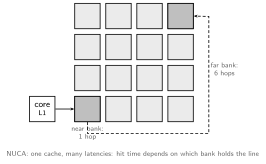

Private write-back caches may hold several copies of a shared block. Coherence controls read/write permissions and preserves values across ownership changes. The Memory Model additionally constrains ordering across locations.
The Primer’s definition (Sorin, Hill, Wood) is the cleanest: think of each memory block’s lifetime as divided into epochs.
Invalidate protocols grant write permission by invalidating other copies. They are common, but update protocols also exist. Coherence usually operates on cache lines, so independent variables in one line can cause false sharing.
Token coherence expresses permission with tokens: a reader needs at least one; a writer needs all. Data-transfer and progress rules are also necessary.
States encode validity, writeback responsibility, and permissions. Here “dirty” means responsibility for data newer than the backing level, not necessarily a bitwise difference:
| State | valid | dirty | exclusive | owner | Meaning |
|---|---|---|---|---|---|
| Modified | yes | potentially | yes | yes | read-write; only private copy; backing data may be stale |
| Owned | yes | potentially | no guarantee | yes | read-only, but this cache supplies data; sharers may exist |
| Exclusive | yes | no | yes | yes | clean, sole copy; a store changes E→M silently |
| Shared | yes | no* | no guarantee | no | read-only; others may share |
| Invalid | no | no usable copy |
MSI is a basic write-invalidate protocol. The two optional states each optimize one common pattern:
An S copy can differ from memory when another cache is O; the O cache carries writeback responsibility. E data suppliers and response rules vary by protocol.
The state diagram for MSI, with each edge labeled processor event / bus transaction issued:
The bus transactions are common to nearly all protocols: GetS (obtain read-only copy), GetM (obtain read-write copy, invalidating others), Upg (upgrade S to M without a data transfer), and PutM/PutO (evict a dirty or owned block, writing it back). Clean S/E evictions may be silent if the protocol tolerates conservative sharer information; exact directories may require notification.
Transient states represent unfinished transactions: waiting for data, invalidation acknowledgments, or ownership transfer. MSHRs or controller entries track them. Correct protocols must handle racing requests and guarantee freedom from deadlock, livelock, and starvation.
In snooping, controllers observe broadcast requests and react: owners supply data and sharers invalidate for a writer. An ordered bus provides transaction order; split-transaction or distributed implementations need additional rules for responses and completion.
A simple exchange has a request and a data response, but hop count and latency depend on topology and acknowledgments. Broadcast traffic limits scaling. Coherence ordering alone does not enforce SC; the cores must also obey the required memory ordering.
Directories restore scalability by replacing broadcast with unicast plus lookup. A directory at each block’s home node (typically banked with the LLC or memory controller) records the block’s global state: who owns it, and a sharer list of who holds copies. Example message paths (acknowledgment destinations and hop counts vary by protocol):
The home serializes conflicting requests to each block. Explicit data/acknowledgment rules tell requesters when permission is complete. This removes global broadcast ordering but adds directory state and protocol messages.
Directory storage is its own design axis. A full bit-vector (one bit per core per block) is exact but grows as ; alternatives trade precision for space:
Coherence composes hierarchically: a multi-level hierarchy runs coherence between L1s and the shared LLC, and a multi-socket system runs a second protocol (often directory) between chips, with each chip’s LLC acting as a single “cache” at the outer level. The inclusion policy of the LLC interacts directly with coherence:
| Policy | LLC contains | Coherence effect | Cost |
|---|---|---|---|
| Inclusive | superset of all L1s | LLC tags double as a snoop filter/directory: a miss in LLC means no L1 has it | duplicated capacity; LLC eviction must back-invalidate L1 copies |
| Exclusive | only blocks not in L1s | maximizes total capacity | needs a separate snoop filter; blocks swap between levels |
| Non-inclusive | no guarantee | middle ground | still needs sharer tracking |
Inclusion is a property of a particular hierarchy and generation, not an ISA or vendor-wide rule.
A large LLC may be distributed across banks. When hit latency depends on the selected bank and requester location, it is NUCA (non-uniform cache access):

Sharing a LLC among cores also raises a fairness question. Plain LRU allocates capacity to whoever accesses most, not who benefits most: a streaming thread with no reuse can strip-mine the cache away from a neighbor that needed it. Cache partitioning fixes the incentive: divide the ways among cores, sized by measured benefit (utility-based partitioning tracks each core’s hit curve vs. allocated ways), or by a QoS floor. The standard measurement trick, set dueling, dedicates a few dozen sets to each competing policy and lets miss counters on those sets pick the winner for the rest of the cache.
Because the SWMR invariant is enforced per cache block (e.g. 64 B), two cores writing different variables that happen to share a block fight over it as if they shared data:
struct { int a; int b; } counters; // same cache block
// core 0 loop: counters.a++; // GetM: invalidates core 1
// core 1 loop: counters.b++; // GetM: invalidates core 0Alternating writers repeatedly transfer write permission (coherence misses). Several local writes can occur between transfers; the cost is not necessarily one transfer per increment. The software fix is padding/alignment so hot per-core data gets its own block; hardware mitigations (sub-block coherence state, speculating that an invalid block’s data is still usable) exist but are rare. The related migratory sharing pattern (read-then-write under a lock, block hopping core to core) is the opposite case: hardware can optimize it by predicting the write and granting exclusive access on the initial read, generalizing the E-state trick.
Coherence keeps caches invisible; what the programmer is actually promised about load/store ordering across cores is the consistency contract, covered in Memory Model.
Author: Sai Govardhan (saigov14@gmail.com)
License: MIT.